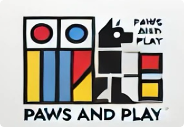
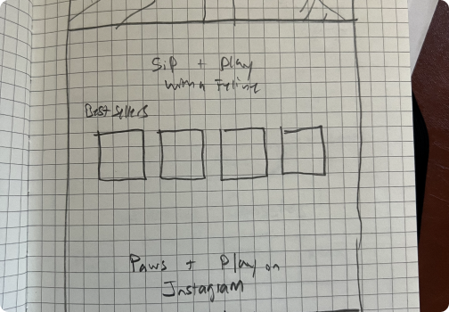
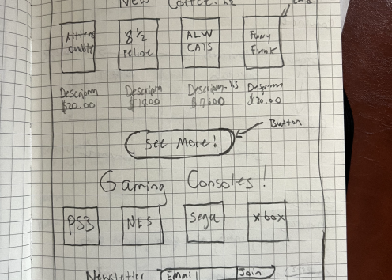
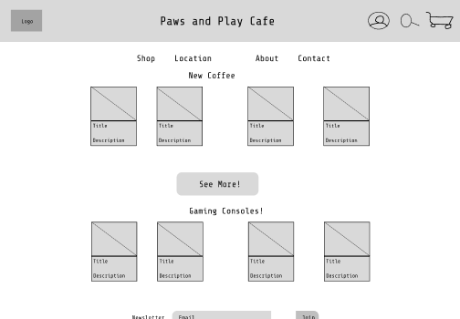
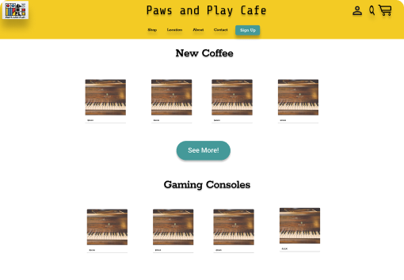
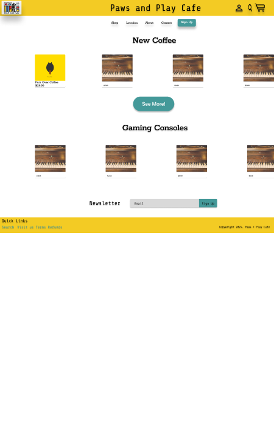
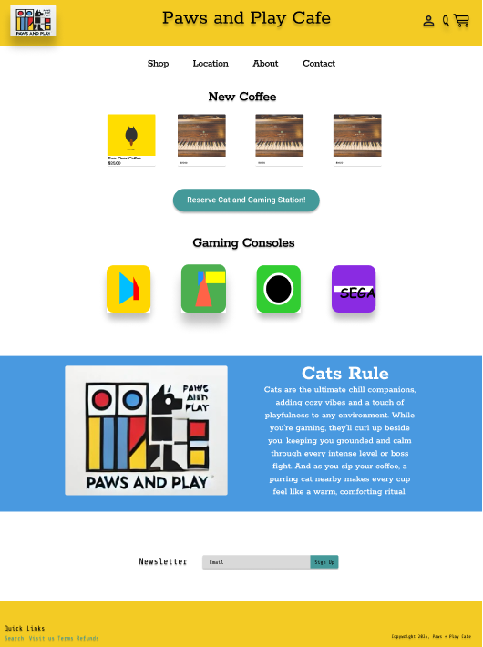
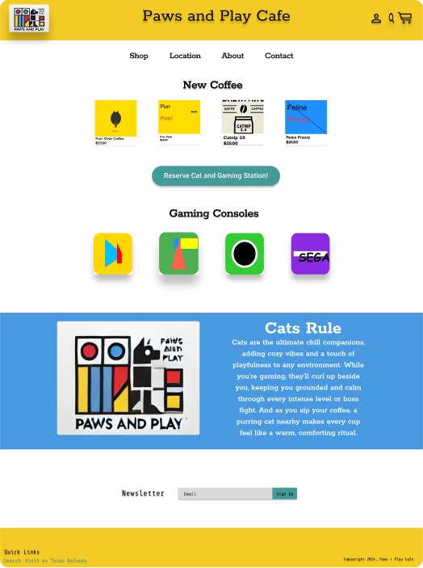
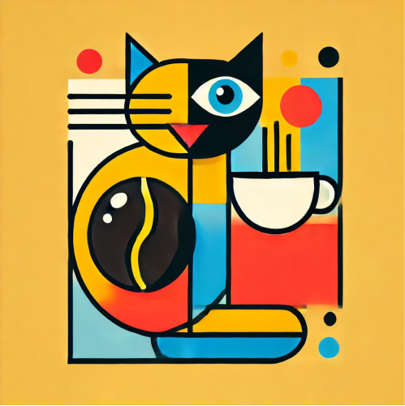

Case Study Product Showcase
Case Study Paws + Play Cafe
Case Study Overview
Roles
- UX/UI Developer
- Prototyper
- Web Developer
Tools
- Figma
- chatGpt
Project Duration
- July 2024 - November 2024
- 4 Months
Challenges/Problem Statement
Challenge/Problem Overview
- Easily reserve gaming sessions at video game stations.
- Learn about adoptable cats, arrange interactions, and start the adoption process.
- Order coffee and receive notifications when their order is ready for pickup.
The primary challenges include integrating diverse services into one seamless experience and ensuring that each user segment can efficiently find and use the features they need.
Goals
- Goal 1 - Get more coffee sales
- Goal 2 - Get more video game station reservations
- Goal 3 - Increase Cat adoption rate per customer visit
Research/Analysis
Research Analysis
Five Whys
Problem: Low user engagement and inefficient service management at Paws + Play Café.
1. Why is there low user engagement and inefficient service management?
- Because users find it challenging to navigate between coffee ordering, reserving gaming stations, and browsing adoptable cats within the café's offerings.
2. Why do users find it challenging to navigate between these services?
- Because the services were not initially integrated or clearly organized, making it difficult for users to understand how to access each one efficiently.
3. Why were the services not integrated or organized clearly?
- Because the café initially focused on providing these services independently, without a unified approach or central user interface to connect them.
4. Why wasnt a unified approach developed earlier?
- Because the café lacked insights into how customers would interact with multiple services simultaneously, leading to a scattered, service-based design rather than a cohesive user experience.
5. Why did the café lack insights into customer interaction across services?
- Because no user-centered design or research was conducted at the start to understand how customers would prefer to navigate these options in a single experience.
Solution Recap:
By conducting user research, the Paws + Play Café team understood the need for an integrated user interface on the landing page, allowing customers to smoothly order coffee, reserve gaming stations, and explore cat adoption options. This approach provided a cohesive experience that boosted engagement, streamlined service management, and aligned with customer needs.
Persona

Wireframe(Lo-fi/Sketching)/Prototype
Wireframe Overview
Started wire framing basic landing page based on site needs and incorporated aspects that customers were looking for like order button.
   Interface Design
interface Design Overview
Added cards for coffee options and newsletter sign up
Interface Design
interface Design Overview
Added Gaming Console buttons based on Bauhaus design and added cat Hero information for mission statement.
Interface Design
interface Design Overview
Final landing page design with user research findings added. Clean minimal design that makes it clear fo users to find the needed services.
Research Validation/Feedback
Research Validation/Feedback Result
Testers across user segments participated in scenario-based testing: - “Gamers” were asked to book and manage gaming sessions. - “Pet enthusiasts” navigated through cat profiles and practiced booking interactions. - “Coffee lovers” tested ordering and notifications.
Key Findings and Iterations
Testers across user segments participated in scenario-based testing: - Streamlined Flow: Users requested fewer steps for coffee orders, so home page button was added. - Clearer Cat Info: Testers suggested more details about cat adoptions. Hero banner with mission statement was added.
Conclusion/Reflection
Outcomes and Impact
Future Enhancements/Reflection
Gamification: Reward users with points for ordering coffee or interacting with cats, redeemable for discounts or café merchandise. Virtual Cat Profile Updates: Allow users to get notified of new cats available for adoption. Community Engagement: Incorporate community events and gaming tournaments to strengthen the cafés local presence.
Conclusion
The Paws + Play Café UX design demonstrates how thoughtful, user-centered design can merge diverse experiences in a single location. By providing an intuitive interface for ordering, reserving, and adopting, the café successfully meets the needs of a broad user base while supporting its mission to promote pet adoption.